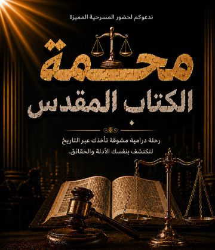

فعالياتحفل ختام موسم حفظ الكلمة 2026
في ختام موسم جديد من خدمة "حفظ الكلمة"، نجتمع لنحتفل برحلة عاش فيها الأطفال والشباب والخدام مع كلمة الله؛ ليس فقط من خلال الحفظ، بل عبر التأمل، والتعلم، والشركة، وسعينا لتحويل الكلمة إلى حياة تُعاش وتُثمر.
سجّل حضورك من هنا 👇